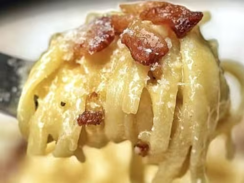
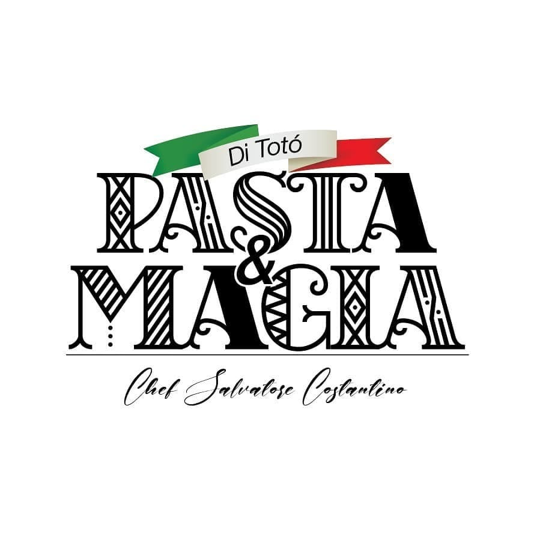

Spaghetti Carbonara alla Chicago
Nossa releitura americana da carbonara: mais cremosa e leve que a clássica italiana di Totó, com bacon crocante, gema e parmesão.
Peça agora
Massas frescas, molhos que levam horas de amor e receitas de família trazidas diretamente da Itália pelo chef Salvatore Costantino.
Nascido em Biella, no Piemonte, Salvatore Costantino, carinhosamente apelidado de "Totó", se formou na Scuola Professionale Alberghiera Zegna e aprendeu os segredos da cozinha com a nonna Angela e a mamma Stella. Hoje, aos 50 anos, vive em São Paulo desde 2015 e é pai do pequeno Giovannino.
Em 2012 veio para o Brasil com uma missão: trazer sua cultura italiana em pratos autênticos. Apaixonado por gastronomia, escolhe sempre os ingredientes mais frescos para que cada garfada seja uma viagem à Itália. Assim nasceu o Pasta e Magia di Totó, restaurante 100% italiano e exclusivamente online.
Peça já o seu prato favorito pelo aplicativo de entrega de sua preferência.
Ver Cardápio Completo